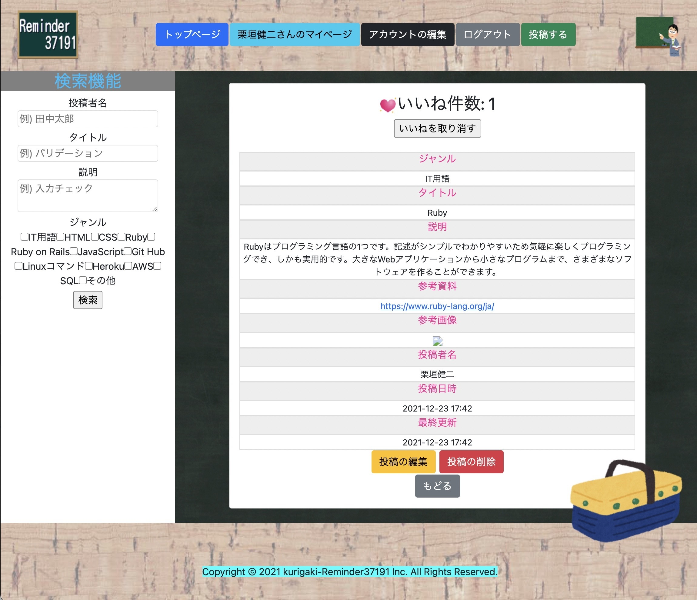
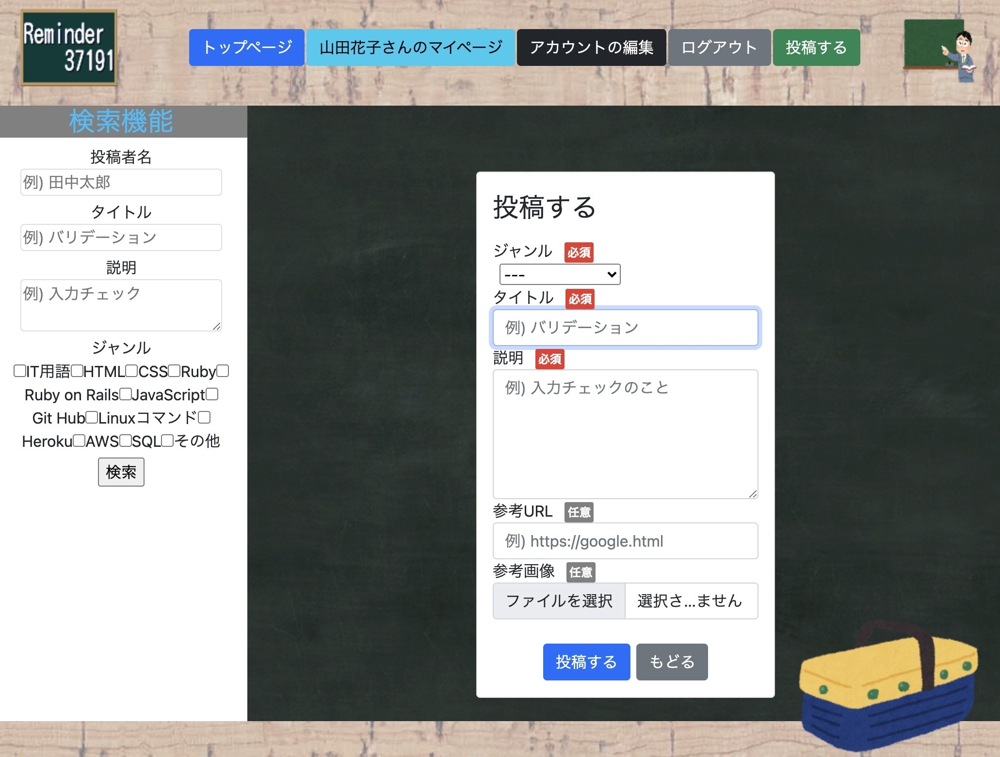

Reminder37191(備忘録用アプリ)
開発環境
Ruby / Ruby on Rails / MySQL / GitHub / Heroku / Visual Studio Code
-
概要
制作時間 216時間 URL reminder37191.herokuapp.com/ ID admin PASS 2222 -
動作テスト
テスト用アカウント
mail taro@test PASS aaa111
OUTLINEアプリケーションの概要
オリジナルアプリケーションとして、備忘録用の自分ノートアプリを作成しました。
主な機能は、ユーザー登録機能をして投稿した内容をすぐに検索できる機能です。
トップページにアクセスすると、様々なジャンルの投稿が表示されています。それをクリックすると、その投稿の詳細を見ることができます。
ユーザー登録をすると、それらの投稿をいいねして自身のマイページに追加することができます。
また、投稿をする際は参考資料として画像やURLのリンクを埋め込むこともできます。
-
開発に至った経緯
プログラミングを学習する中で、効率的に学習することができないかと課題に感じることがありました。
私はプログラミングの学習は紙の媒体に書き込んで学習するよりも実際に打ち込んで身体で覚えた方が効率的だと考えました。
そこで実際にプログラミングやIT用語を打ち込んでアウトプットすることができるオリジナルアプリケーションを考えました。
-
開発で工夫したこと
1つ目がkaminariというRuby gemを使いページネーションをつけたことです。投稿が増えれば増えるほど検索をかけても多くの投稿が表示されることを予想したからです。
2つ目がいいね機能の実装です。これにより特に覚えたいことはマイページに残しておくことができます。
いずれも、投稿したアウトプットを探しやすくするために工夫したことです。
-
今後実装したいと思っていること
投稿毎にコメントをできるフォームを作りたいと考えています。理由は2つあります。
1つ目が、アウトプットに誤りがあった際にコメントで知らせることができるようにするためです。
２つ目は、投稿者が既存のフォームだけでは説明不足だった際に追記として使っていただくことができるようにするためです。